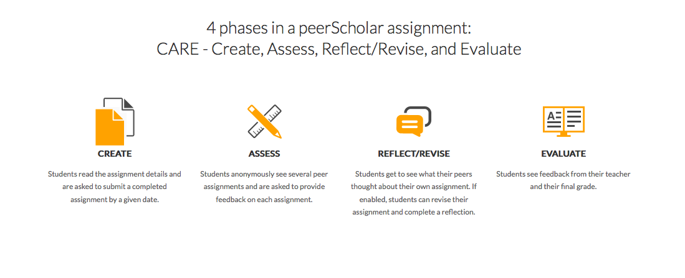

Flourishing in an
Online Environment
Academic Technology at
The Faculty of Nursing
created by neal macinnes / neal.macinnes@utoronto.ca / it.nursing@utoronto.ca
Summary of Links
- Internet Speedtest: http://www.speedtest.net
- Adobe: Acrobat Reader, Flashplayer, and Shockwave
- Java: Java
- Web Browser: Internet Explorer and/or Firefox
- UTOR ID: www.utorid.utoronto.ca/
- Webmail: mail.utoronto.ca/
- Blackboard: portal.utoronto.ca
- Blackboard Help: portalinfo.utoronto.ca/
- Webinar Support: www.portalinfo.utoronto.ca/content/webinar
- Infocommons Help Desk: help.ic.utoronto.ca
- Antivirus Software: http://www.antivirus.utoronto.ca/
- Office 365 Student Advantage: Download Instructions
- Turnitin: www.turnitin.com
- Proctor U: www.proctoru.com/testitout
Welcome
A bit about me...
Background
I am an Educational Technologist, and have worked in higher-ed for about 10 years now.
I am the Academic Technology Support Analyst here at the Faculty of Nursing.
What that means...
I provide support for all the learning technology you will be using during your program.
Such as...


Some Personal Context
Obligatory Photo of
an Adorable Animal
Wait for it...

Expectations of Online Learning
- Join up in groups of two/three
- Come up with one fear, one challenge, and one benefit of online learning
- Share your responses with everyone
1 Fear, 1 Challenge, and 1 Benefit
Technical Requirements & Tools
Technical Requirements
Computer

Computer (Min. Requirements)
Laptop or Desktop
2GB RAM
3.0 GHz Single Core Processor
Windows 7 or Mac OSX 10.9
Webcam with at least 640 x 480 resolution
Headphones
Microphone (Built-in, on headphones, or external)
Short Story...
If you've purchased a laptop or computer in the last 3-5 years you're probably set!
Webcam
Most new laptops (within 3-5 years) have webcams built in. If you are using a desktop computer you may need to purchase a webcam. In addition, you will need a microphone (most webcams and laptops have built-in microphones) and a set of headphones such as the kind that come with mobile devices and smartphones.
Internet Speed
In addition to the computer system requirements it is also recommended you have sufficiently fast internet. Ensure you have DSL or Cable Internet with at least 1.5 Mbps download speed and at least 1.5 Mbps upload speed. Dial-up Internet is not sufficient and is not recommended.
http://www.speedtest.net
Required Applications
- Acrobat Reader, Flashplayer, and Shockwave
- Java
- Internet Explorer and/or Firefox
UTORID
https://www.utorid.utoronto.ca/
It is your key to accessing a number of crucial services here at UofT
UTmail+ and Portal
Tech Freebies!
Microsoft Office 365 Advantage
Download Instructions
OneDrive

Antivirus
http://www.antivirus.utoronto.ca/
Windows: Microsoft Security Essentials
MAC: ClamXav
Course Tools
Blackboard
Blackboard
Blackboard Mobile App
Support
- Contact Course Instructor or Teaching Assistant
- Contact it.nursing@utoronto.ca
- help.ic.utoronto.ca
Collaborate Webinars
Collaborate Webinars
Turnitin
Turnitin
Proctor U
Proctor U
Test Your System:
PeerScholar
PeerScholar
Tips for Success
Be Consistent
Participate
Manage Your Time
Thank You!
it.nursing@utoronto.ca